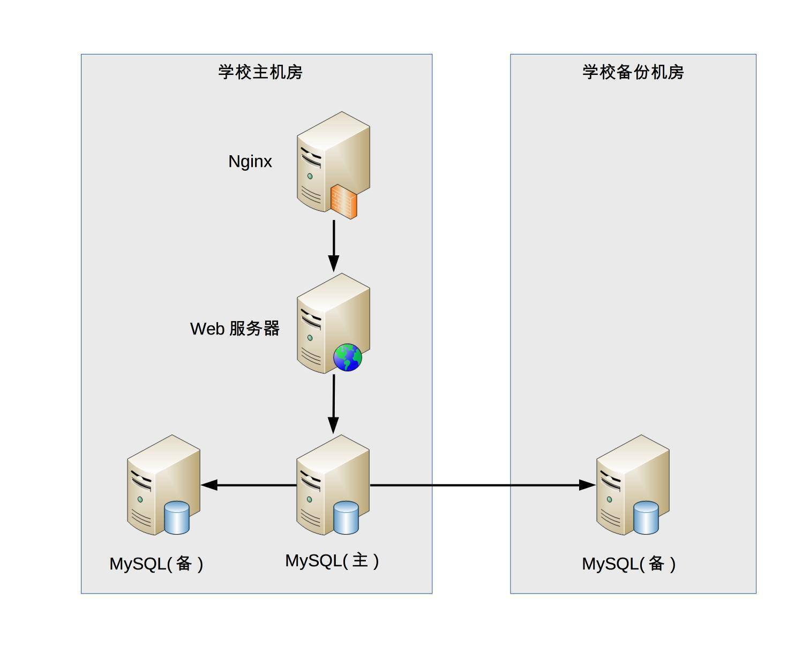

- 00 开篇词 照着做，你也能成为架构师！.md.html
- 01 架构到底是指什么？.md.html
- 02 架构设计的历史背景.md.html
- 03 架构设计的目的.md.html
- 04 复杂度来源：高性能.md.html
- 05 复杂度来源：高可用.md.html
- 06 复杂度来源：可扩展性.md.html
- 07 复杂度来源：低成本、安全、规模.md.html
- 08 架构设计三原则.md.html
- 09 架构设计原则案例.md.html
- 10 架构设计流程：识别复杂度.md.html
- 11 架构设计流程：设计备选方案.md.html
- 12 架构设计流程：评估和选择备选方案.md.html
- 13 架构设计流程：详细方案设计.md.html
- 14 高性能数据库集群：读写分离.md.html
- 15 高性能数据库集群：分库分表.md.html
- 16 高性能NoSQL.md.html
- 17 高性能缓存架构.md.html
- 18 单服务器高性能模式：PPC与TPC.md.html
- 19 单服务器高性能模式：Reactor与Proactor.md.html
- 20 高性能负载均衡：分类及架构.md.html
- 21 高性能负载均衡：算法.md.html
- 22 想成为架构师，你必须知道CAP理论.md.html
- 23 想成为架构师，你必须掌握的CAP细节.md.html
- 24 FMEA方法，排除架构可用性隐患的利器.md.html
- 25 高可用存储架构：双机架构.md.html
- 26 高可用存储架构：集群和分区.md.html
- 27 如何设计计算高可用架构？.md.html
- 28 业务高可用的保障：异地多活架构.md.html
- 29 异地多活设计4大技巧.md.html
- 30 异地多活设计4步走.md.html
- 31 如何应对接口级的故障？.md.html
- 32 可扩展架构的基本思想和模式.md.html
- 33 传统的可扩展架构模式：分层架构和SOA.md.html
- 34 深入理解微服务架构：银弹 or 焦油坑？.md.html
- 35 微服务架构最佳实践 - 方法篇.md.html
- 36 微服务架构最佳实践 - 基础设施篇.md.html
- 37 微内核架构详解.md.html
- 38 架构师应该如何判断技术演进的方向？.md.html
- 39 互联网技术演进的模式.md.html
- 40 互联网架构模板：存储层技术.md.html
- 41 互联网架构模板：开发层和服务层技术.md.html
- 42 互联网架构模板：网络层技术.md.html
- 43 互联网架构模板：用户层和业务层技术.md.html
- 44 互联网架构模板：平台技术.md.html
- 45 架构重构内功心法第一式：有的放矢.md.html
- 46 架构重构内功心法第二式：合纵连横.md.html
- 47 架构重构内功心法第三式：运筹帷幄.md.html
- 48 再谈开源项目：如何选择、使用以及二次开发？.md.html
- 49 谈谈App架构的演进.md.html
- 50 架构实战：架构设计文档模板.md.html
- 51 如何画出优秀的软件系统架构图？.md.html
- 加餐｜业务架构实战营开营了.md.html
- 加餐｜单服务器高性能模式性能对比.md.html
- 加餐｜扒一扒中台皇帝的外衣.md.html
- 如何高效地学习开源项目 华仔，放学别走！ 第3期.md.html
- 新书首发 《从零开始学架构》.md.html
- 架构专栏特别放送 华仔，放学别走！ 第2期.md.html
- 架构专栏特别放送 华仔，放学别走！第1期.md.html
- 架构师必读书单 华仔，放学别走！ 第5期.md.html
- 架构师成长之路 华仔，放学别走！ 第4期.md.html
- 结束语 坚持，成就你的技术梦想.md.html
- 捐赠
03 架构设计的目的
周二，我们聊了架构出现的历史背景和推动因素。以史为鉴，对我们了解架构设计的目的很有帮助。谈到架构设计，相信每个技术人员都是耳熟能详，但如果深入探讨一下，“为何要做架构设计？”或者“架构设计目的是什么？”类似的问题，大部分人可能从来没有思考过，或者即使有思考，也没有太明确可信的答案。
架构设计的误区
关于架构设计的目的，常见的误区有：
- 因为架构很重要，所以要做架构设计
这是一句正确的废话，架构是很重要，但架构为何重要呢？
例如：不做架构设计系统就跑不起来么？
其实不然，很多朋友尤其是经历了创业公司的朋友可能会发现，公司的初始产品可能没有架构设计，大伙撸起袖子简单讨论一下就开始编码了，根本没有正规的架构设计过程，而且也许产品开发速度还更快，上线后运行也还不错。
例如：做了架构设计就能提升开发效率么？
也不尽然，实际上有时候最简单的设计开发效率反而是最高的，架构设计毕竟需要投入时间和人力，这部分投入如果用来尽早编码，项目也许会更快。
例如：设计良好的架构能促进业务发展么？
好像有一定的道理，例如设计高性能的架构能够让用户体验更好，但反过来想，我们照抄微信的架构，业务就能达到微信的量级么？肯定不可能，不要说达到微信的量级，达到微信的1/10做梦都要笑醒了。
- 不是每个系统都要做架构设计吗
这其实是知其然不知其所以然，系统确实要做架构设计，但还是不知道为何要做架构设计，反正大家都要做架构设计，所以做架构设计肯定没错。
这样的架构师或者设计师很容易走入生搬硬套业界其他公司已有架构的歧路，美其名曰“参考”“微改进”。一旦强行引入其他公司架构后，很可能会发现架构水土不服，或者运行起来很别扭等各种情况，最后往往不得不削足适履，或者不断重构，甚至无奈推倒重来。
- 公司流程要求系统开发过程中必须有架构设计
与此答案类似还有因为“架构师总要做点事情”，所以要做架构设计，其实都是舍本逐末。因为流程有规定，所以要做架构设计；因为架构师要做事，所以要做架构设计，这都是很表面地看问题，并没有真正理解为何要做架构设计，而且很多需求并不一定要进行架构设计。如果认为架构师一定要找点事做，流程一定要进行架构设计，就会出现事实上不需要架构设计但形式上却继续去做架构设计，不但浪费时间和人力，还会拖慢整体的开发进度。
- 为了高性能、高可用、可扩展，所以要做架构设计
能够给出这个答案，说明已经有了一定的架构经历或者基础，毕竟确实很多架构设计都是冲着高性能、高可用……等“高XX”的目标去的。
但往往持有这类观点的架构师和设计师会给项目带来巨大的灾难，这绝不是危言耸听，而是很多实际发生的事情，为什么会这样呢？因为这类架构师或者设计师不管三七二十一，不管什么系统，也不管什么业务，上来就要求“高性能、高可用、高扩展”，结果就会出现架构设计复杂无比，项目落地遥遥无期，团队天天吵翻天……等各种让人抓狂的现象，费尽九牛二虎之力将系统整上线，却发现运行不够稳定，经常出问题，出了问题很难解决，加个功能要改1个月……等各种继续让人抓狂的事件。
架构设计的真正目的
那架构设计的真正目的究竟是什么？
从周二与你分享的架构设计的历史背景，可以看到，整个软件技术发展的历史，其实就是一部与“复杂度”斗争的历史，架构的出现也不例外。简而言之，架构也是为了应对软件系统复杂度而提出的一个解决方案，通过回顾架构产生的历史背景和原因，我们可以基本推导出答案：架构设计的主要目的是为了解决软件系统复杂度带来的问题。
这个结论虽然很简洁，但却是架构设计过程中需要时刻铭记在心的一条准则，为什么这样说呢？
首先，遵循这条准则能够让“新手”架构师心中有数，而不是一头雾水。
新手架构师开始做架构设计的时候，心情都很激动，希望大显身手，甚至恨不得一出手就设计出世界上最牛的XX架构，从此走上人生巅峰，但真的面对具体的需求时，往往都会陷入一头雾水的状态：
“这么多需求，从哪里开始下手进行架构设计呢？”。
“架构设计要考虑高性能、高可用、高扩展……这么多高XX，全部设计完成估计要1个月，但老大只给了1周时间”。
“业界A公司的架构是X，B公司的方案是Y，两个差别比较大，该参考哪一个呢？”。
以上类似问题，如果明确了“架构设计是为了解决软件复杂度”原则后，就很好回答。
- “这么多需求，从哪里开始下手进行架构设计呢？”
——通过熟悉和理解需求，识别系统复杂性所在的地方，然后针对这些复杂点进行架构设计。
- “架构设计要考虑高性能、高可用、高扩展……这么多高XX，全部设计完成估计要1个月，但老大只给了1周时间”
——架构设计并不是要面面俱到，不需要每个架构都具备高性能、高可用、高扩展等特点，而是要识别出复杂点然后有针对性地解决问题。
- “业界A公司的架构是X，B公司的方案是Y，两个差别比较大，该参考哪一个呢？”
——理解每个架构方案背后所需要解决的复杂点，然后才能对比自己的业务复杂点，参考复杂点相似的方案。
其次，遵循这条准则能够让“老鸟”架构师有的放矢，而不是贪大求全。
技术人员往往都希望自己能够做出最牛的东西，架构师也不例外，尤其是一些“老鸟”架构师，为了证明自己的技术牛，可能会陷入贪大求全的焦油坑而无法自拔。例如：
“我们的系统一定要做到每秒TPS 10万”。
“淘宝的架构是这么做的，我们也要这么做”。
“Docker现在很流行，我们的架构应该将Docker应用进来”。
以上这些想法，如果拿“架构设计是为了解决软件复杂度”这个原则来衡量，就很容易判断。
- “我们的系统一定要做到每秒TPS 10万”
——如果系统的复杂度不是在性能这部分，TPS做到10万并没有什么用。
- “淘宝的架构是这么做的，我们也要这么做”
——淘宝的架构是为了解决淘宝业务的复杂度而设计的，淘宝的业务复杂度并不就是我们的业务复杂度，绝大多数业务的用户量都不可能有淘宝那么大。
- “Docker现在很流行，我们的架构应该将Docker应用进来”
——Docker不是万能的，只是为了解决资源重用和动态分配而设计的，如果我们的系统复杂度根本不是在这方面，引入Docker没有什么意义。
简单的复杂度分析案例
我来分析一个简单的案例，一起来看看如何将“架构设计的真正目的是为了解决软件系统复杂度带来的问题”这个指导思想应用到实践中。
假设我们需要设计一个大学的学生管理系统，其基本功能包括登录、注册、成绩管理、课程管理等。当我们对这样一个系统进行架构设计的时候，首先应识别其复杂度到底体现在哪里。
性能：一个学校的学生大约1 ~ 2万人，学生管理系统的访问频率并不高，平均每天单个学生的访问次数平均不到1次，因此性能这部分并不复杂，存储用MySQL完全能够胜任，缓存都可以不用，Web服务器用Nginx绰绰有余。
可扩展性：学生管理系统的功能比较稳定，可扩展的空间并不大，因此可扩展性也不复杂。
高可用：学生管理系统即使宕机2小时，对学生管理工作影响并不大，因此可以不做负载均衡，更不用考虑异地多活这类复杂的方案了。但是，如果学生的数据全部丢失，修复是非常麻烦的，只能靠人工逐条修复，这个很难接受，因此需要考虑存储高可靠，这里就有点复杂了。我们需要考虑多种异常情况：机器故障、机房故障，针对机器故障，我们需要设计MySQL同机房主备方案；针对机房故障，我们需要设计MySQL跨机房同步方案。
安全性：学生管理系统存储的信息有一定的隐私性，例如学生的家庭情况，但并不是和金融相关的，也不包含强隐私（例如玉照、情感）的信息，因此安全性方面只要做3个事情就基本满足要求了：Nginx提供ACL控制、用户账号密码管理、数据库访问权限控制。
成本：由于系统很简单，基本上几台服务器就能够搞定，对于一所大学来说完全不是问题，可以无需太多关注。
还有其他方面，如果有兴趣，你可以自行尝试去分析。通过我上面的分析，可以看到这个方案的主要复杂性体现在存储可靠性上，需要保证异常的时候，不要丢失所有数据即可（丢失几个或者几十个学生的信息问题不大），对应的架构如下：

学生管理系统虽然简单，但麻雀虽小五脏俱全，基本上能涵盖软件系统复杂度分析的各个方面，而且绝大部分技术人员都曾经自己设计或者接触过类似的系统，如果将这个案例和自己的经验对比，相信会有更多的收获。
小结
今天我为你分析了架构设计的误区，结合周二讲的架构设计的历史背景，给出架构设计的主要目的是为了解决软件系统复杂度带来的问题，并分析了一个简单复杂度的案例，希望对你有所帮助。
这就是今天的全部内容，留一道思考题给你吧。请按照“架构设计的主要目的是为了解决软件复杂度带来的问题”这个指导思想来分析一下你目前的业务系统架构，看看是否和你当时分析的结果一样？
欢迎你把答案写到留言区，和我一起讨论。相信经过深度思考的回答，也会让你对知识的理解更加深刻。（编辑乱入：精彩的留言有机会获得丰厚福利哦！）
© 2019 - 2023 Liangliang Lee. Powered by gin and hexo-theme-book.